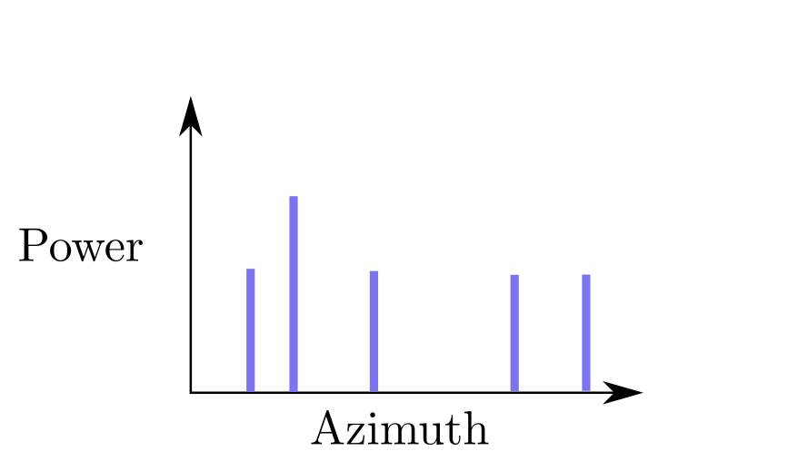

Multipath is the general phenomenon in which radiation from a transmitter can take multiple propagation paths to reach the receiver. Multipath is very familiar in the context of sound propagation (if you've ever heard an echo), but it is also familiar to those who work with radio frequency (RF) propagation, especially if you do so indoors.
I first tangled with multipath during my X-ray vision project, since I was trying to use wireless communication between nodes in an indoor environment to map the nodes' positions. In open space, the received signal strength between transmitting nodes can accurately indicate the node-to-node distances, and this can allow for accurate mapping of the nodes in space through a variety of algorithmic techniques (mostly based on Multidimensional Scaling). However, when indoors, the received signal strength no longer tends to be a good predictor for distance, since floors, walls, and obstacles create a wide array of multipath trajectories which make the received signal strength a complicated function of not only the separation of the transmitters, but also the obstacle geometry around them.
I've explored ways around this for certain applications where additional boundary conditions come to the rescue. However, I started to wonder:
When talking about multipath, the concept of a multipath ghost often comes up, an idea similar to an image charge in electrostatics, or a reflection in a mirror. Reflected radiation can create the illusion that two signals originating from the same transmitter actually originated from two different transmitters. In reality, one of these apparent transmitters is a reflection of the real one (Figure 2).
If we consider only the reflections originating from a single bounce off walls of a square room, we can draw the apparent constellation of ghost transmitters along with the true transmitter (Figure 3). However, if we allow up to two bounces before reaching the transmitter, our constellation grows considerably (Figure 4). In this way, a tesselation of multipath ghosts can be constructed to infinite order. For any realistic multipath situation, it can make sense to truncate the order to some finite limit (very little transmitter power survives 1,000,000 bounces, for instance).
I wrote a Javascript simulation to leverage the equivalence between enclosed transmitters and open-air transmitter lattices in order to calculate the average radiated power throughout a room.
Rectangular rooms are a particularly nice scenario for analyzing multipath since the ghost transmitters form a nice, periodic lattice in space (since the room geometry tessellates in space). However, on paper I was flummoxed when trying to observe the ghost transmitter pattern in a room geometry that does not tessellate, such as a pentagon. Indeed, my simulation was able to reveal that the ghost transmitters have a more nuanced structure when working with these non-tessellating room geometries (Figure 1 at the top of the page).
To explore this in greater depth, I added a feature to my simulation that allowed me to draw irregular room shapes (Figure 6). The approach of modeling multipath in a room as an open-air aggregate field from a lattice of transmitters seemed to consistently produce the expected results even for these irregular room geometries. After exploring this simulation, I began to wonder whether it might be possible to determine the room geometry from the received signal at the receiver.
Let's examine whether a receiver might be able to determine the surrounding room geometry by examining the received transmitter power as a function of angle of arrival (in 2D, just azimuth). To start, let's introduce a formalism for the scenarios previously examined.
Suppose that \(\vec{w}_{1}\) was known. Then it would be possible to calculate \(\vec{p}_{1,w_{1}}\). $$ \vec{p}_{1,w_{1}} = \vec{p}_{0} + \frac{(\vec{w}_{1} - \vec{p}_{0})^{T}\vec{w}_{1}}{|\vec{w}_{1}|^{2}}\vec{w}_{1} $$ With this knowledge, it would be possible to calculate \(\theta\) from $$ \cos\theta = \frac{|\vec{p}_{1,w_{1}}|^{2} + |\vec{p}_{0}|^{2} - |\vec{w}_{1} - \vec{p}_{0}|^{2}} {2|\vec{p}_{0}||\vec{p}_{1,w_{1}}|} $$ For each wall \(\vec{w}_{i}\), we would calculate a corresponding \(\theta_{i}\) where a ghost transmitter peak would be observed in azimuth. This would raise expectations of observing something like the following.
In a recursive fashion, we can consider the higher order ghost transmitters that come from each first order ghost transmitter. In doing so, we observer that higher order ghost transmitters are necessarily further from the receiver (larger \(\vec{w}\) and \(\vec{p}_{0}\)) while the separation between the ghost transmitters and the reflection boundary (\(|\vec{w}_{1} - \vec{p}_{1,w_{1}}|\)) remains bounded by twice the width of the room. On these grounds, $$ \lim_{n \rightarrow \infty} \frac{|\vec{w}_{1} - \vec{p}_{n, w_{1}}|}{|\vec{p}_{n, w_{1}}|}=0,\ \lim_{n \rightarrow \infty} \frac{|\vec{p}_{n, w_{1}}|}{|\vec{p}_{n}|}=1 $$ which implies that $$ \lim_{n \rightarrow \infty}\theta=0 $$ This leads to the important conclusion that very high order ghost transmitters become closely concentrated around their lower order counterparts to the point of becoming indistinguishable.
We might now ask, is the location (in azimuth) of the peaks sufficient information for us to determine the vectors \(\vec{w}_{i}\) used to generate them? Unfortunately, it is not. As a simple example, examine the following alternative room geometry for the azimuth locations from Figure 3.
We might think to resort to the higher order ghost transmitters to distinguish between these two constellations. Indeed, in the ideal case this allows us to differentiate these rooms, but in practice it is extremely difficult to leverage this level of information. Therefore, it is necessary to access additional sources of information in order to extract information about the room.